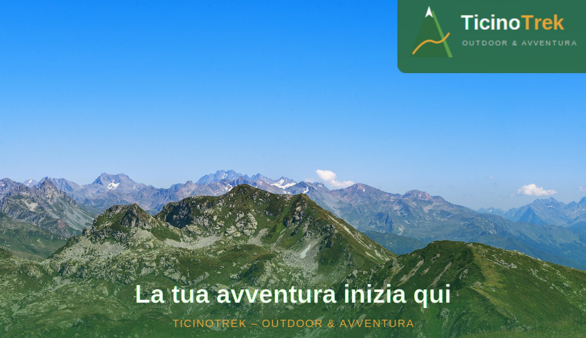

TicinoTrek Sagl è il punto di riferimento per gli appassionati di outdoor e trekking in Canton Ticino. Con sede a Bellinzona, offriamo attrezzatura di qualità, consulenza esperta e una gamma completa di servizi per vivere la montagna al meglio.
Dalle escursioni giornaliere ai trekking di più giorni, dalle famiglie ai professionisti, siamo al tuo fianco per ogni avventura sui sentieri ticinesi.
→ Scopri chi siamoAttrezzatura completa per ogni esigenza
Guide alpine certificate
Anni di passione per la montagna
I migliori marchi outdoor
Un viaggio attraverso i più bei paesaggi delle Alpi svizzere